Estates returns (ERIC 2023/24) and occupied beds (KH03) joined with the demand data
sense-energy estates-analysis (module code/src/sense_energy/analysis/estates.py, loaders
data/eric.py and data/nhs_beds.py); figures from code/scripts/estates/ in
code/reports/figures/estates/, tables in code/reports/estates/. 9 October 2026.
Inputs: the ESC extracts estatereturns.zip (ERIC 2023/24 site, trust and PFI tables, 2,869 sites)
and nhsbed.zip (KH03 occupied beds, overnight and day-only, by sector and by specialty, quarterly
to June 2024), unpacked in code/data/external/eric/ and code/data/external/nhs_beds/.
1. ERIC validates the half-hourly meters
ERIC electricity is taken as the sum of its five consumption components; the headline field is
filled for only 158 sites. 114 of the 134 electricity sites in the panel match ERIC by site code.
Over ERIC's financial year (April 2023 – March 2024) the metered total, grossed up for missing
half-hours, is compared with ERIC's consumption, and the highest metered half-hour with ERIC's
maximum demand (meter_vs_eric, peak_vs_max_demand).
| Coverage flag | Sites | Rule |
|---|---|---|
| ok | 65 | annual ratio within 0.65 – 1.5 (median 1.00, IQR 0.98 – 1.00); peak ratio median 1.00 (IQR 0.95 – 1.03) |
| partial supply | 3 | ratio below 0.65: our meters miss part of the site (RWR32, RWRPU-X, RYVA8) |
| aggregate supply | 4 | ratio above 1.5: one meter feeds more than the ERIC site (RYV01, RYV03, RYV04, RYV13) |
| on-site CHP | 4 | ratio outside the range at a site with gas-fired CHP; import and consumption then differ by the CHP output, so the mismatch says nothing about coverage (R0A07, RN325, RYX08, RH801) |
| meter gaps | 35 | fewer than 80 % of the year's half-hours observed |
| no ERIC figure | 23 | site code not in ERIC or no electricity reported |
On-site CHP explains the hardest sites. The 12 PoC sites with gas-fired CHP have a median day-ahead nMAE of 16.2 % (Chronos-2 + IFS ENS) against 9.9 % at the 64 other sites in ERIC; LightGBM shows the same gap (19.0 % against 10.8 %). Their skill against seasonal naive is no lower, because the naive forecast suffers equally: the grid import of a CHP site steps up and down with the engine's operation. RH801 and RXN02, the two large sites behind the weak South West and North West regional results, both run CHP, which is a more likely cause of their "halved" days than outages.
Scoring is robust to the flags (scoring_by_flag). Restricting the PoC to the 62 verified sites
lowers the learned models' nMAE by about 0.3 points (seasonal naive by 0.1) and changes no ranking;
dropping the 11 flagged supplies raises it by 0.15 to 0.25 points.
| Method | All 91 sites | Without flagged supplies (80) | Verified only (62) |
|---|---|---|---|
| Seasonal naive | 18.5 | 18.6 | 18.4 |
| LightGBM + IFS ENS | 13.1 | 13.3 | 12.8 |
| Chronos-2 + IFS ENS | 11.5 | 11.7 | 11.3 |
| TimesFM 3.0 + IFS ENS | 11.7 | 11.9 | 11.5 |
2. Building descriptors replace site identity in LightGBM
Two new variants of LightGBM with forecast weather: without the site identifier, and with eleven ERIC descriptors instead of it (site type, floor area, heated volume, mean construction year, LED coverage, CHP units, heat pumps, solar generated, electricity per m², gas-to-electricity ratio, single rooms). ERIC's year ends before the test window, so nothing leaks.
| LightGBM + IFS ENS | nMAE (%) | CRPS | Coverage (%) | CRPS skill (%) |
|---|---|---|---|---|
| with site identity (as before) | 13.1 | 6.27 | 73 | 43 |
| no site identity | 13.1 | 6.20 | 75 | 42 |
| ERIC descriptors instead | 13.0 | 6.15 | 75 | 43 |
The site identifier adds nothing; the model learns each site from its own recent history. ERIC descriptors improve on the identifier-free model at 69 % of sites (median −0.1 points nMAE), both variants bring the 80 % interval closer to nominal, and electricity per m² enters the ten most used features. Because the model no longer needs a site's identity, it can in principle forecast sites it was never trained on; a leave-sites-out test would confirm that.
3. Energy intensity
Across all English sites in ERIC (intensity_by_type), median electricity use per m² rises from
56 kWh for non-inpatient sites to 80 for mental health, 87 for community hospitals, 112 for general
acute and 146 for specialist acute hospitals; gas use is 2.3 times electricity on the median site.
In the panel, the round-the-clock demand-shape cluster is the most intensive (median 106 kWh/m²),
the office-like cluster the least (62) (cluster_intensity).
Across 134 acute trusts, electricity per occupied bed-day has a median of 63 kWh (IQR 39 – 93).
Floor area explains trust electricity better than occupied beds (log-correlation 0.72 against
0.60; bed_day_intensity).
4. Grid headroom for heat electrification
Scenario: all gas heating replaced by air-source heat pumps, added half-hour by half-hour to each site's observed electricity for 2023/24.
- Heat demand = gas × 0.85 boiler efficiency, split into a weather-independent part (hot water,
sterilisation, catering) and space heating proportional to heating degree-hours at the site
(ERA5). Fitted on the 39 gas meters of the panel: base temperature 15.5 °C (median daily R² 0.72,
heat_model), weather-independent share 0.48 (median over the 36 weather-driven meters). - Heat-pump electricity = heat / COP, with the Staffell et al. (2012) air-source curve at a 55 °C flow temperature (seasonal COP 2.55).
- Capacity = ERIC available capacity × 0.95 power factor.
Panel sites are included only when the meters cover the whole site (flag ok), today's peak is below the stated capacity, and the site has no CHP (whose gas also generates electricity): 31 of 54 modelled sites.
| Panel (31 sites, half-hourly) | England (631 ERIC sites) | |
|---|---|---|
| Median peak / capacity today | 0.44 | 0.55 |
| Median peak / capacity with heat pumps | 0.88 | 0.97 |
| Sites above capacity with heat pumps | 13 (42 %) | 48 % |
| Annual electricity increase (median) | +77 % | – |
| Peak increase (median) | ×1.72 | – |
The England column applies the panel's calibration to every gas-heated, non-CHP ERIC site with a
plausible capacity: peak = ERIC maximum demand + 2.9 × the mean heat-pump load (the median
coincident increase; heating and today's peak rarely coincide, so the factor is below the
heat-pump peak-to-mean ratio of 3.9). General acute hospitals are most constrained (68 % above
capacity), non-inpatient sites least (40 %) (headroom_by_type, headroom_england,
headroom_map, headroom_panel). The example week (heat_pump_week, RFSDA, coldest week of
2023/24) shows the mechanism: the heat-pump load more than doubles demand and keeps it near its
peak through the night.
Assumptions that matter: the flow temperature (lower flow temperatures raise COP), the boiler efficiency, the use of today's capacity (no reinforcement), and no thermal storage or demand shifting.
5. Occupied beds
The KH03 extract adds day-only occupied beds and a 78-specialty breakdown to the overnight-by-sector
series already pulled from the public site. It ends in June 2024 and overlaps the demand data for
seven quarters (December 2022 – June 2024), none in the test window. Within trusts, quarterly mean
demand does not move with occupied beds (correlation −0.04 over 19 trusts; beds_vs_demand):
occupancy barely varies between quarters, demand varies with the season. Beds are a cross-sectional
normaliser, not a forecasting covariate.
Figures
meter_vs_eric, peak_vs_max_demand, scoring_by_flag, intensity_by_type, cluster_intensity,
bed_day_intensity, beds_vs_demand, heat_model, heat_pump_week, headroom_panel,
headroom_england, headroom_by_type, headroom_map (PDF + PNG + data CSV, master figure
specification).
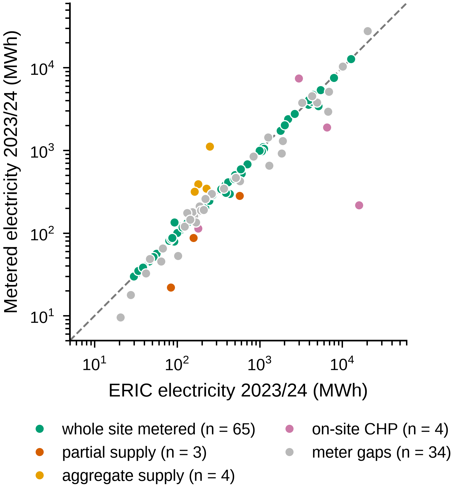
meter_vs_eric PDF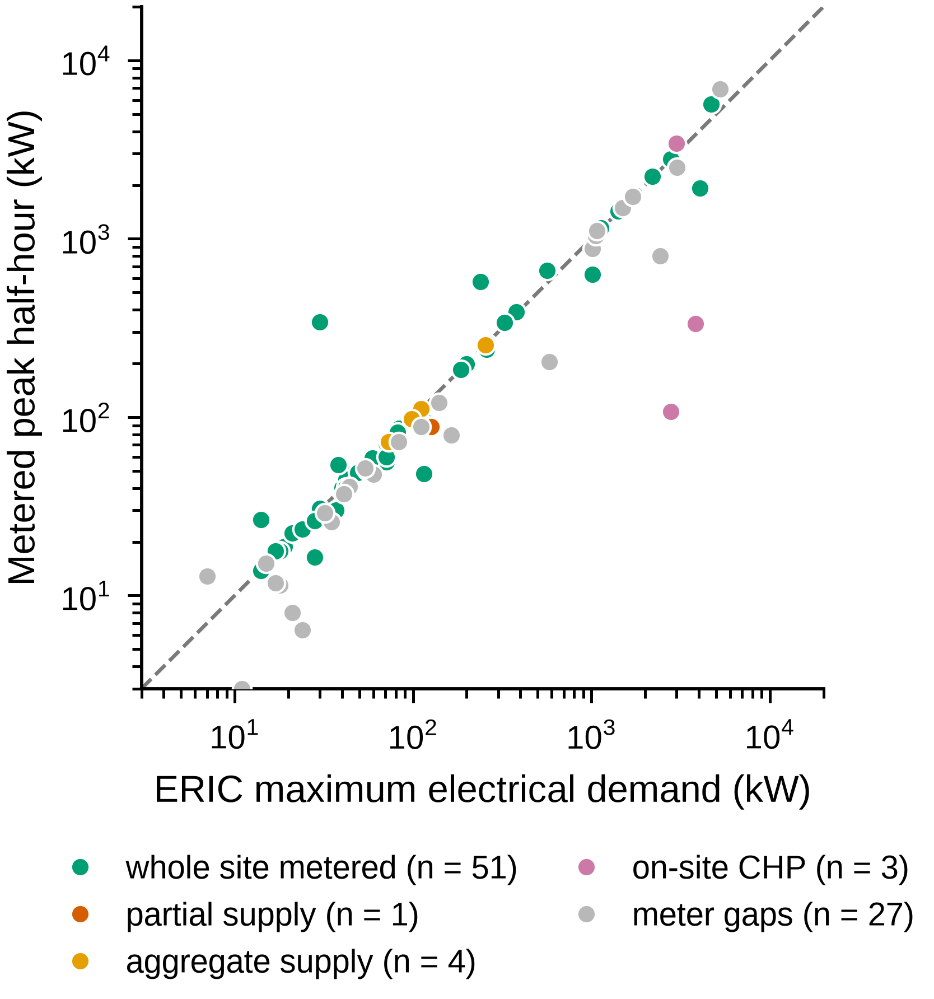
peak_vs_max_demand PDF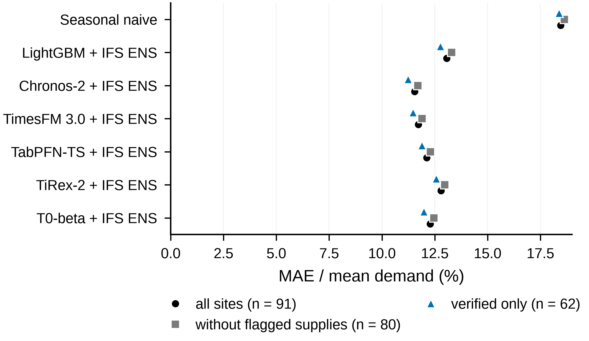
scoring_by_flag PDF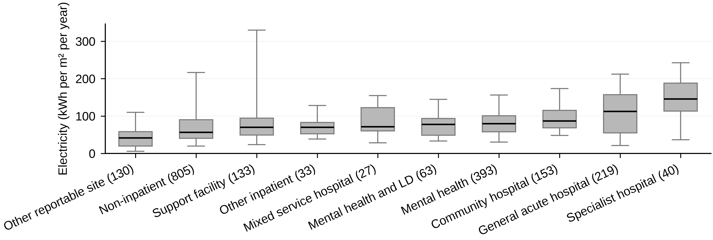
intensity_by_type PDF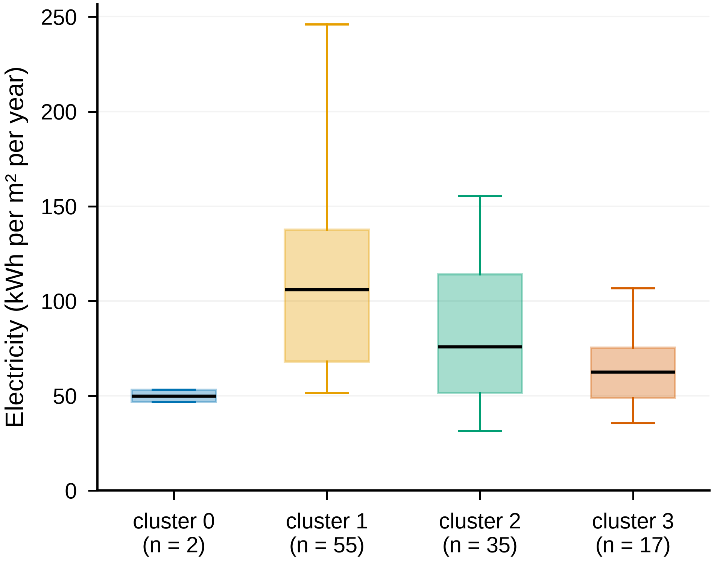
cluster_intensity PDF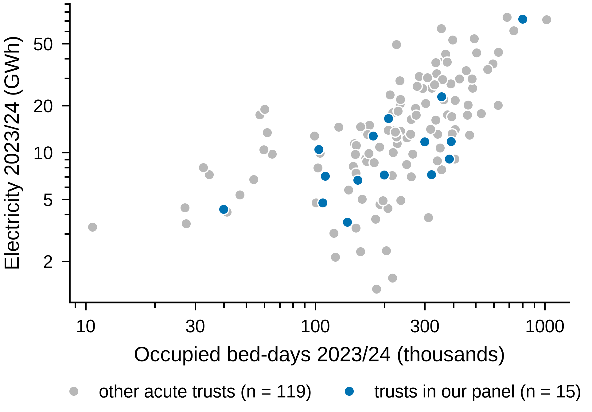
bed_day_intensity PDF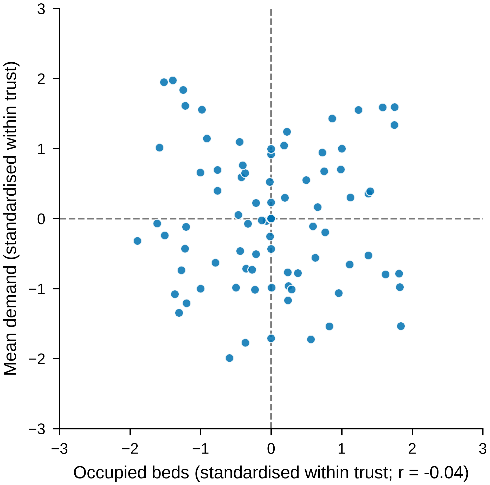
beds_vs_demand PDF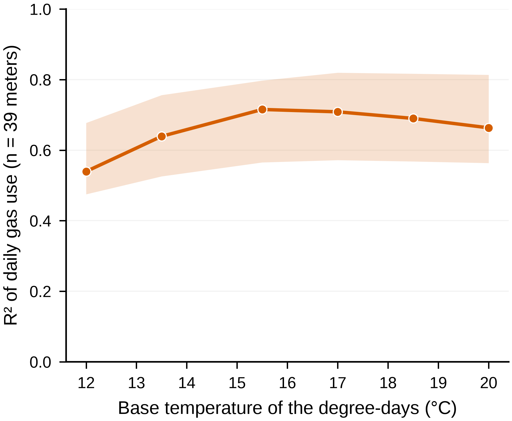
heat_model PDF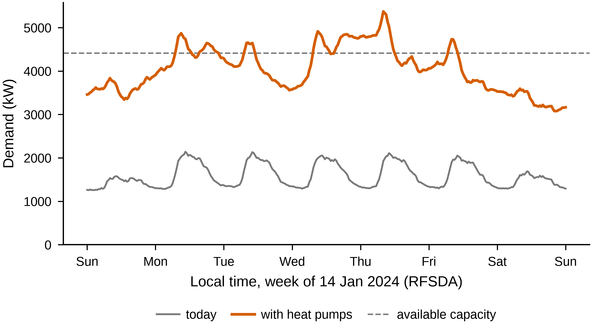
heat_pump_week PDF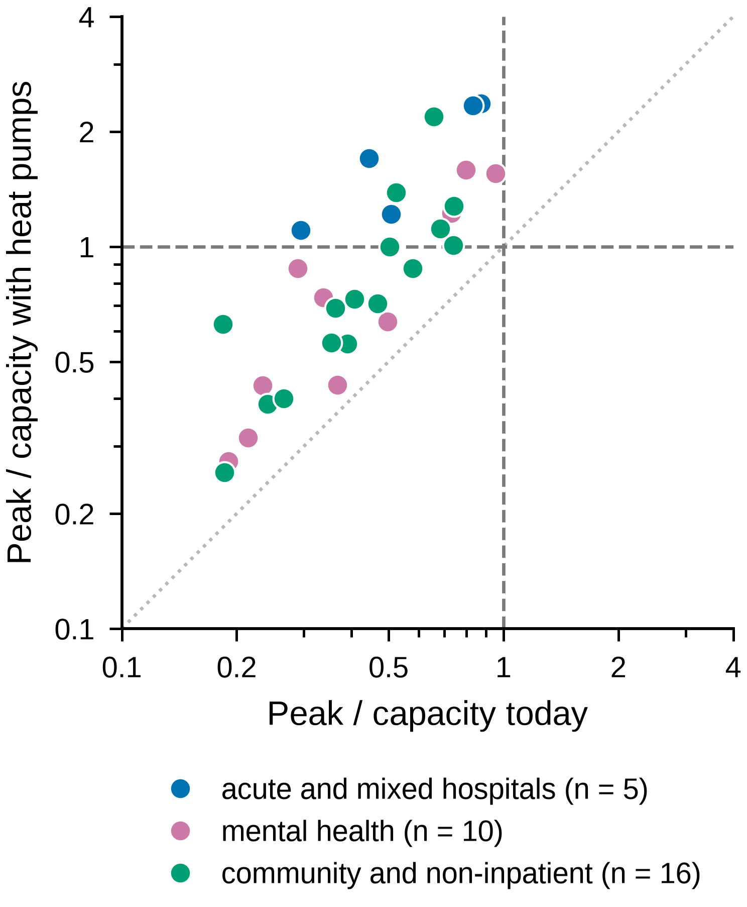
headroom_panel PDF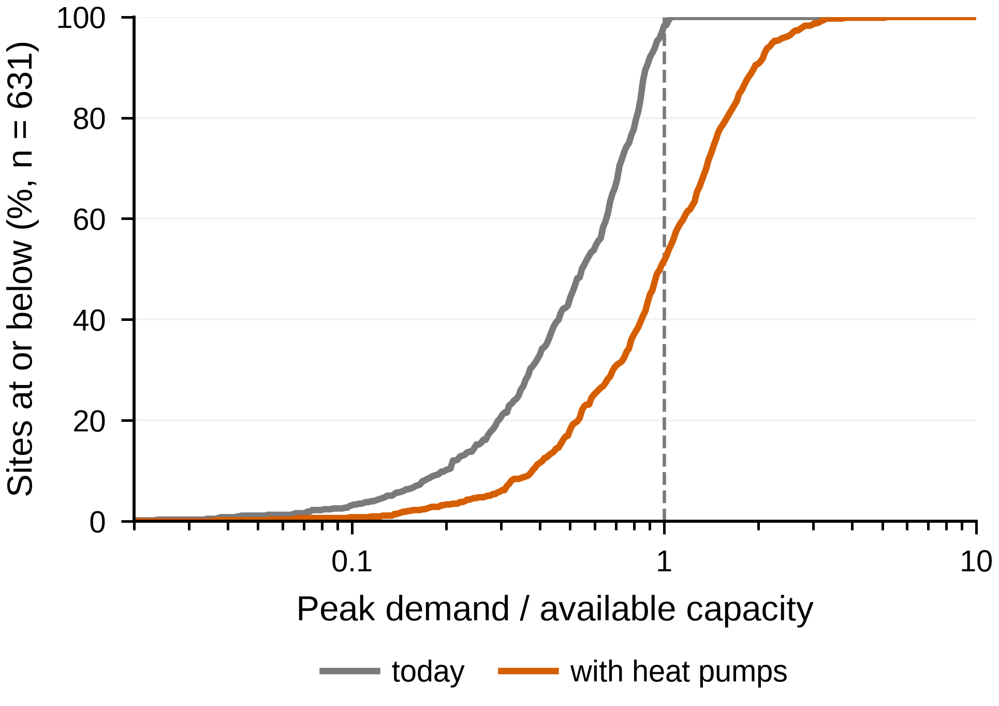
headroom_england PDF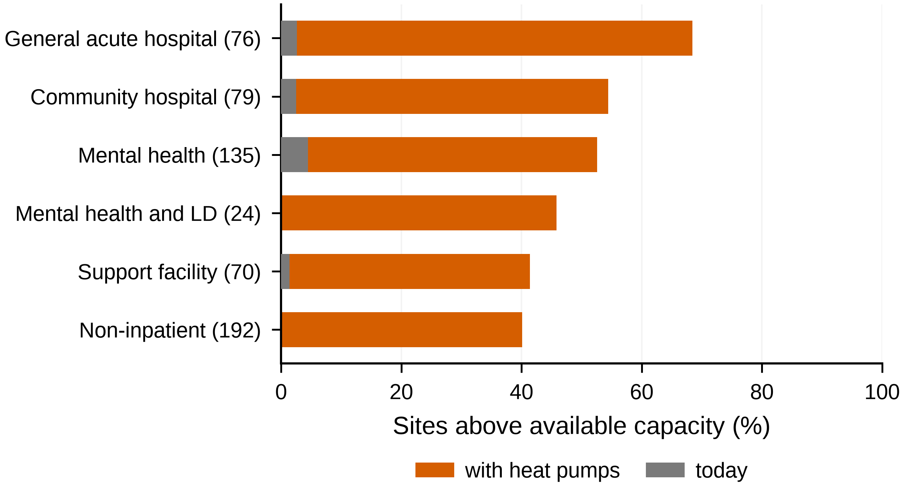
headroom_by_type PDF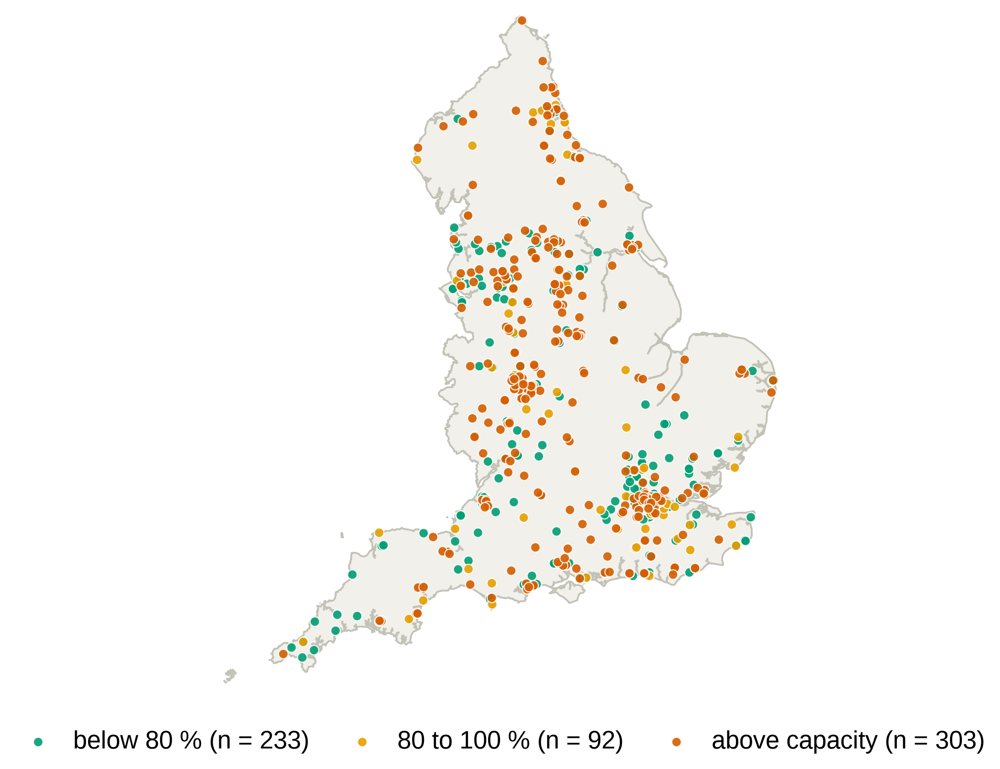
headroom_map PDF5. Sites with on-site CHP
sense-energy chp-profile (analysis/chp.py, tables in code/reports/chp/, figure
chp_variability). The 24 sites with fossil-fuel CHP carry 70 % of the panel's electricity; their
meters record grid import (demand minus CHP output). Against the five acute hospitals without CHP
their weekday import varies 3.6 times as much from day to day (median CV 36 % against 10 %), 9 % of
their weekdays sit more than 30 % above the surrounding 21-weekday median (none at acute sites
without CHP), and Chronos-2 + IFS ENS errs 16.2 % against 3.8 % nMAE with the same skill over
seasonal naive. Their meter-to-ERIC ratios span 0.39 – 1.08 (10th – 90th percentile). Grid import
at one non-CHP acute site, Trafford General, halves from spring 2025 (about 410 to 215 kW), which
points to generation or a supply change after ERIC 2023/24.
What the CHP sites really use (chp_generation, ERIC 2024/25). The 2024/25 return, published
16 October 2025 and loaded as interim/eric_2024_25_site.parquet (sense-energy build-eric), adds
fields the 2023/24 collection did not have: the CHP's electrical and thermal output, its gas input,
electricity purchased from CHP, exported electricity and heat, and the unit sizes in kW. For 20 of
the 24 CHP sites the return is internally plausible (capacity factor 0.05–1.05); for them the implied
site demand (import + CHP output − exports) is 23.3 MW on average against 9.2 MW of grid import, so
the import meters see 40 % of what these sites use. CHP covers a median 50 % of a site's electricity
(University Hospital Coventry 76 %, Royal Preston 78 %, Wythenshawe 68 %) at a median capacity factor
of 0.70; thermal output is 0.25–1.75 times electrical. Our metered import over the same year matches
the returned import at most sites (ratio 0.95–1.06), and names the exceptions: our Wythenshawe meter
carries 27 % of the site's import and Great Western 2 % (partial supplies), Royal Devon 159 % (more
than the ERIC site). Three returns are unit errors (Norfolk and Norwich reports 2.4 MWh from a 1 MW
unit, Cromer a unit with no output, Great Western 0.4 GWh from 1 MW). Table:
code/reports/chp/generation_2024_25.csv.
Table: 29 rows
| site_name | eric_import_mean_kw | implied_mean_kw | chp_elec_kw | chp_share | capacity_factor | meter_to_eric_import | plausible |
|---|---|---|---|---|---|---|---|
| UNIVERSITY HOSPITAL | 946.11 | 3990.82 | 3360 | 0.76 | 0.91 | 1.06 | True |
| NORFOLK & NORWICH UNIVERSITY HOSPITAL | 2835.98 | 2836.25 | 1000 | 0 | 0 | 0 | False |
| WYTHENSHAWE HOSPITAL | 793.76 | 2486.76 | 2026 | 0.68 | 0.84 | 0.27 | True |
| ROYAL UNITED HOSPITAL | 526 | 1956.27 | 2000 | 0.73 | 0.74 | 0.91 | True |
| ROYAL PRESTON HOSPITAL | 425.14 | 1954.35 | 1800 | 0.78 | 0.85 | 1.03 | True |
| ROYAL DEVON & EXETER HOSPITAL (WONFORD) | 670.65 | 1851.3 | 2500 | 0.64 | 0.47 | 1.59 | True |
| GREAT WESTERN HOSPITAL | 1675.63 | 1723.81 | 1000 | 0.03 | 0.05 | 0.02 | False |
| YORK HOSPITAL | 837.1 | 1514.88 | 1166 | 0.45 | 0.58 | 1 | True |
| NORTH MANCHESTER GENERAL HOSPITAL | 704.47 | 1342.41 | 1200 | 0.48 | 0.53 | 1.03 | True |
| HOMERTON UNIVERSITY HOSPITAL | 1146.73 | 1313.96 | 310 | 0.13 | 0.54 | 0.96 | True |
| GEORGE ELIOT HOSPITAL | 338.36 | 1152.84 | 1200 | 0.71 | 0.75 | 0.95 | True |
| CHORLEY AND SOUTH RIBBLE DISTRICT GENERAL HOSPITAL | 331.62 | 860.61 | 600 | 0.61 | 0.88 | 1.04 | True |
| ROBERT JONES & AGNES HUNT ORTHOPAEDIC HOSPITAL | 431.35 | 754.6 | 400 | 0.43 | 0.81 | 0.86 | True |
| SCARBOROUGH HOSPITAL | 172.89 | 750.67 | 776 | 0.77 | 0.74 | 1 | True |
| WARWICK HOSPITAL | 398.11 | 747.62 | 532 | 0.47 | 0.66 | 0.91 | True |
| MACCLESFIELD DISTRICT GENERAL HOSPITAL | 417.8 | 735.38 | 500 | 0.43 | 0.64 | 1 | True |
| NORTH DEVON DISTRICT HOSPITAL | 243.26 | 719.78 | 800 | 0.66 | 0.6 | 1.04 | True |
| SPRINGFIELD UNIVERSITY HOSPITAL | 471.68 | 713.68 | 229 | 0.18 | 0.89 | True | |
| WITHINGTON COMMUNITY HOSPITAL | 77.86 | 157.32 | 100 | 0.51 | 0.79 | True | |
| REDWOODS CENTRE SHREWSBURY | 68.74 | 133.82 | 124 | 0.49 | 0.52 | 0.8 | True |
| CROMER HOSPITAL | 87.81 | 126 | 90 | 0 | 0 | 0.83 | False |
| ROYAL LEAMINGTON SPA HOSPITAL | 124.49 | 124.8 | 6 | 0 | 0.05 | 0.95 | True |
| THE NEW SELBY WAR MEMORIAL HOSPITAL | 66.75 | 81.32 | 35 | 0.18 | 0.42 | 1 | True |
| BIRMINGHAM CHILDRENS HOSPITAL | 182.01 | 1.48 | False | ||||
| LISSON GROVE HEALTH CENTRE | 12.41 | 0.98 | False | ||||
| OAK LANE CLINIC | 7.19 | False | |||||
| QUEENS PARK HEALTH CENTRE | 0.58 | False | |||||
| PARSON GREEN HEALTH CENTRE | 30.76 | False | |||||
| WORLDS END HEALTH CENTRE | 8.75 | False |
source: code/reports/chp/generation_2024_25.csv (29 rows shown)
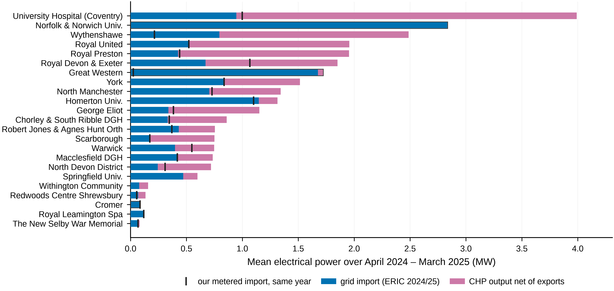
chp_generation PDF7. Year-on-year changes and the steps in the meter
analysis/estates_changes.py (eric_changes.csv, demand_steps.csv, figure eric_changes).
Of the 109 panel sites in both returns, 45 report a change from 2023/24 to
2024/25: LED coverage up by ten points or more at 35, solar generation appearing at
5 and growing by half or more at 2, heat pumps installed at
4 and added to at 2, CHP units changing at 2. The
returns give the year, not the date; a PELT changepoint search on each site's daily demand (log,
net of its day-of-week pattern, penalty six times the robust day-to-day variance times log n,
segments of at least 28 days, steps of at least 15 %) gives the candidates: 1103 steps across the
panel, 539 within a quarter of the 2024/25 year. 32 of the changed sites
without CHP have such a step; the small sites that went to full LED show level drops of 15 to
40 % (Tribune House, Cheadle Hospital, Malton, Longton), the CHP sites' steps are plant switching
and are flagged rather than used. The median absolute change in returned annual electricity is
9.2 %. These dated changes are the treatments for the next event studies; they also say
that the 2023/24 descriptors (LED share above all) are a year stale for a third of the panel.
Table: 45 rows
| site_code | site_name | led_pct_2324 | led_pct_2425 | solar_new | heat_pumps_new | elec_change_pct | steps_in_window | step_date | step_change |
|---|---|---|---|---|---|---|---|---|---|
| RCBCA | SCARBOROUGH HOSPITAL | 20 | 100 | False | False | 16.3 | 7 | 2025-02-12 | 15.37 |
| RLT01 | GEORGE ELIOT HOSPITAL | 95 | 95 | False | False | -9.17 | 6 | 2025-06-13 | 5.11 |
| RXN02 | ROYAL PRESTON HOSPITAL | 15 | 48 | False | False | -5.34 | 9 | 2025-06-05 | 3.13 |
| RD130 | ROYAL UNITED HOSPITAL | 70 | 70 | False | False | -7.15 | 6 | 2025-04-02 | 2.93 |
| RKB01 | UNIVERSITY HOSPITAL | 10 | 12 | False | False | 4.95 | 8 | 2025-01-27 | 2.65 |
| RJN71 | MACCLESFIELD DISTRICT GENERAL HOSPITAL | 95 | 95 | False | False | -14.89 | 9 | 2024-07-24 | 1.93 |
| R0A66 | NORTH MANCHESTER GENERAL HOSPITAL | 50 | 55 | False | False | 13.04 | 9 | 2024-06-28 | 1.83 |
| RCB55 | YORK HOSPITAL | 35 | 65 | False | False | 9 | 8 | 2025-01-12 | 1.8 |
| RYEA8 | WINCHESTER & EASTLEIGH RESOURCE CENTRE | 40 | 100 | False | False | -7.14 | 3 | 2025-06-12 | 1.79 |
| RREOX | STAFORDSHIRE AND STOKE ON TRENT WELLBEING SERVICE | 0 | 0 | False | True | 15.43 | 5 | 2025-01-21 | 1.35 |
| RH868 | MARDON HOUSE | 20 | 90 | False | False | 3.95 | 7 | 2024-07-05 | 1.07 |
| RCBNH | BRIDLINGTON HOSPITAL | 0 | 100 | True | True | 20.82 | 11 | 2024-05-30 | 1.06 |
| R6A8O | HOLGATE PARK | 0 | 0 | False | False | -5.44 | 5 | 2025-06-09 | 0.99 |
| RXN01 | CHORLEY AND SOUTH RIBBLE DISTRICT GENERAL HOSPITAL | 67 | 95 | False | False | 9.31 | 9 | 2024-04-29 | 0.95 |
| RH801 | ROYAL DEVON & EXETER HOSPITAL (WONFORD) | 80 | 95 | False | False | 97.16 | 11 | 2024-02-25 | 0.95 |
| RY412 | QUEEN VICTORIA MEMORIAL HOSPITAL | 100 | 100 | False | False | 10.19 | 12 | 2024-09-29 | 0.89 |
| RH880 | NORTH DEVON DISTRICT HOSPITAL | 80 | 99 | False | False | 11.66 | 3 | 2025-01-21 | 0.78 |
| RWR31 | LAMBOURN GROVE | 0 | 100 | False | False | 5 | 2024-02-26 | 0.67 | |
| RRERS | REDWOODS CENTRE SHREWSBURY | 100 | 75 | False | False | -0.22 | 8 | 2024-05-03 | 0.66 |
| RWR13 | ALBANY LODGE | 0 | 100 | False | False | 1.89 | 4 | 2024-11-20 | 0.57 |
| RY433 | HODDESDON HEALTH CENTRE | 100 | 100 | False | False | 4.35 | 12 | 2024-11-10 | 0.53 |
| W6J9Z | LONDON HOUSE | 70 | 100 | False | True | 29.75 | 7 | 2024-11-01 | 0.53 |
| RY424 | CHESHUNT COMMUNITY HOSPITAL | 100 | 100 | False | False | -12.69 | 8 | 2024-09-23 | 0.53 |
| RQY08 | TOLWORTH HOSPITAL | 60 | 60 | False | False | -2.63 | 3 | 2024-06-14 | 0.49 |
| RY479 | PEACE CHILDRENS CENTRE | 100 | 100 | False | False | -8.1 | 10 | 2024-08-31 | 0.48 |
| RJC02 | WARWICK HOSPITAL | 90 | 90 | True | False | -20.74 | 7 | 2024-04-15 | 0.47 |
| RY416 | KINGSWAY HEALTH CENTRE | 0 | 100 | False | False | 8.51 | 7 | 2024-09-30 | 0.47 |
| RY40A | SANDRIDGE GATE | 0 | 100 | False | False | 3.29 | 12 | 2025-06-13 | 0.45 |
| RYX37 | POTTERS BAR COMMUNITY HOSPITAL | 85 | 85 | True | False | -26.97 | 8 | 2024-09-22 | 0.41 |
| RYVF1 | THE POYNT | 90 | 90 | False | False | -26.91 | 8 | 2024-11-08 | 0.41 |
| RWRPU-X | THE COLONNADES | 50 | 100 | False | False | 17.7 | 6 | 2024-11-17 | 0.4 |
| RY407 | DANESBURY | 100 | 100 | False | False | -0.69 | 6 | 2025-06-20 | 0.37 |
| RY318 | CENTRAL EQUIPMENT SERVICES (RED HOUSE) | 0 | 0 | False | False | -42.92 | 4 | 2025-01-10 | 0.37 |
| RREHC | SEVERN FIELDS HEALTH VILLAGE | 70 | 0 | False | False | 14.8 | 3 | 2025-01-31 | 0.36 |
| RQX20 | ST LEONARD'S | 0 | 0 | False | False | 2 | 2024-06-21 | 0.36 | |
| RH8G6 | BIDEFORD HOSPITAL | 78 | 100 | False | False | -10.43 | 6 | 2024-06-12 | 0.36 |
| RYEH2 | DIDCOT WORKSHOP | 70 | 100 | False | False | 43.29 | 3 | 2024-10-01 | 0.36 |
| RY312 | NORWICH COMMUNITY HOSPITAL | 17.75 | 18 | False | True | -7.97 | 6 | 2024-11-05 | 0.34 |
| RYV03 | PRINCESS OF WALES HOSPITAL | 70 | 80 | False | False | 462.64 | 3 | 2024-11-01 | 0.33 |
| RY332 | NORTH WALSHAM & DISTRICT WAR MEMORIAL HOSPITAL | 95 | 95 | False | False | -21.18 | 5 | 2024-11-18 | 0.32 |
| RREA9 | 12 PARK ROAD CANNOCK (PARK HOUSE) | 20 | 0 | False | False | -0.01 | 1 | 2025-06-19 | 0.31 |
| RYX08 | LISSON GROVE HEALTH CENTRE | 80 | 80 | False | False | -39.45 | 2 | 2025-06-18 | 0.31 |
| RWX88 | HILLCROFT HOUSE, THATCHAM | 70 | 100 | False | False | 16.83 | 3 | 2025-06-16 | 0.31 |
| RWR79 | ADULT MENTAL HEALTH UNIT (GAINSFORD HOUSE) | 0 | 100 | False | False | -6.9 | 6 | 2024-01-15 | 0.3 |
| I7P7W | GEORGE BRYAN CENTRE | 20 | 0 | False | False | -13.66 | 7 | 2024-10-01 | 0.29 |
source: code/reports/estates/eric_changes.csv (45 rows shown)
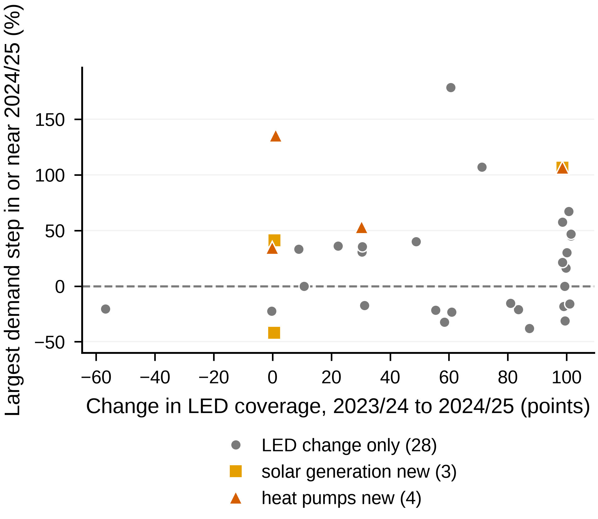
eric_changes PDF